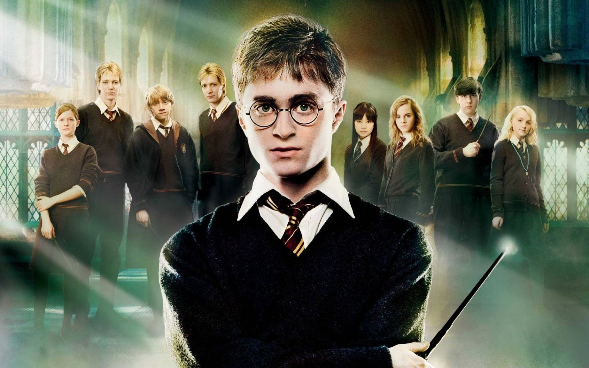

Фильмы о Гарри Поттере
Гарри Поттер и философский камень — 2001 год. Гарри Поттер в младенчестве остался сиротой и одиннадцать лет прожил у дяди и тети, которые его буквально ненавидели. Однажды он получил пригласительное письмо из Хогвартса, где обучались волшебники. Прибыв в школу, он заводит друзей. Вместе ребята пытаются найти философский камень, дарующий бессмертие, надеясь, что отыщут его раньше злодеев.
Гарри Поттер и тайная комната — 2002 год. Гарри Поттер уже переходит на второй курс, надеясь продолжить изучать магию. Забавный эльф по имени Добби предпринимает множество попыток, чтобы предотвратить появление мальчика в школе, объясняя это тем, что там его ждет огромная и смертельная опасность. Парнишка всё же прибывает в Хогвартс и узнает о тайной комнате, где скрывается зло.
Гарри Поттер и узник Азкабана — 2004 год. Дядя Гарри много лет назад был обвинен в смерти его родителей и помещен в тюрьму. Неожиданно становится известно, что он смог сбежать из Азкабана. Все боятся, что мужчина захочет убить выжившего в ту ночь мальчика, однако Сириус Блейк не был на самом деле убийцей и искренне любит своего племянника.
Гарри Поттер и Кубок огня Трое лучших друзей: Гарри, Рон и Гермиона продолжают учиться в школе волшебников. По странному стечению обстоятельств Гарри выпадает возможность принять участие в сложных соревнованиях. Однако никто даже не подозревал, в какой ужас выльется обычное развлекательное мероприятие.
Гарри Поттер и Орден Феникса — 2007 год. Гарри уже учится на пятом курсе. Паренек осознает, что никто из волшебников не верит, что самый жестокий злодей Воландеморт вернулся, однако вскоре они в этом убедятся сами.
Гарри Поттер и Принц-полукровка — 2009 год. Волшебники уже в полной мере ощутили присутствие Воландеморта и его нарастающую силу. Пострадал даже мир маглов. Гарри, его друзья и Дамблдор пытаются понять, как убить злодея и лишить его бессмертия.
Гарри Поттер и Дары Смерти. Часть 1 — 2010 год. Гарри Поттер полон отчаяния, ведь вскоре ему придется сразить с самым могущественным и злобным волшебником – Воландемортом, а помощи ждать совершенно неоткуда. Гарри Поттер и Дары Смерти. Часть 2 — 2011 год. Впереди Гарри ждет грандиозная битва, от которой будет зависеть судьба многих людей и всего мира. Несмотря на огромные смертельные риски, он не намерен отступать.